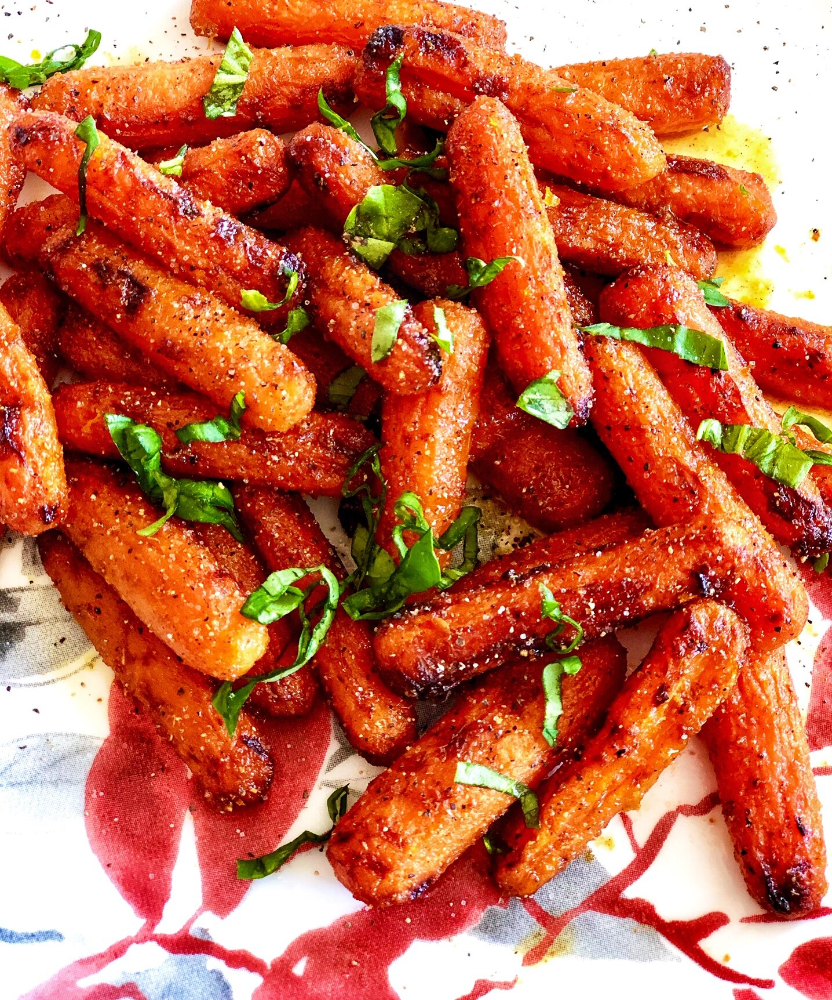

Air Fryer Sweet and Spicy Roasted Carrots

Description
These tender and roasted carrots cooked in the air fryer can be on your table in less than half an hour.
Tossed in a honey-butter sauce and sprinkled with your choice of fresh basil, chives, or just salt and pepper.
Ingredients
- 1 serving cooking spray
- 1 tablespoon butter, melted
- 1 tablespoon hot honey (such as Mike's Hot Honey®)
- 1 teaspoon grated orange zest
- ½ teaspoon ground cardamom
- ½ pound baby carrots
- 1 tablespoon freshly squeezed orange juice
- 1 pinch salt and ground black pepper to taste
Steps
- Preheat an air fryer to 400 degrees F (200 degrees C).
- Spray the basket with nonstick cooking spray.
- Combine butter, honey, orange zest, and cardamom in a bowl.
- Remove 1 tablespoon of the sauce to a separate bowl and set aside.
- Transfer carrots to the air fryer basket.
- Add carrots to the remaining sauce and toss until all are well coated.
- Air fry until carrots are roasted and fork tender, tossing every 7 minutes, for 15 to 22 minutes.
- Mix orange juice with reserved honey-butter sauce.
- Toss with carrots until well combined.
- Season with salt and pepper.